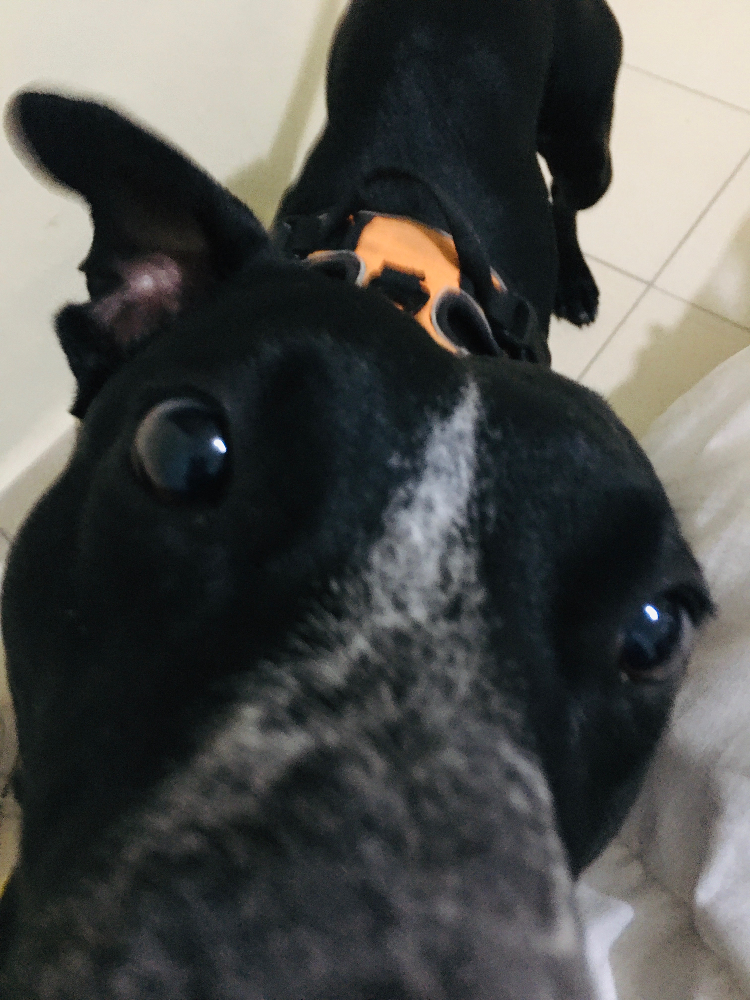

Destinos que tienes que visitar

restaurante macaraná
visité este lugar en el verano de 2014
Como visitante del restaurante macaraná disfrute mucho su servicio ya que la cantidad de cortes que tienen es impresionante y tiene todo mucho sazón
Hotel dreams
visite este lugar en octubre de 2017
El Dreams es un hotel incomparable ya que tiene un excelente servicio para toda la familia es muy grande tiene 5 albercas y una entrada directa hacia el mar , tiene salvavidas en todas las albercas unos restaurantes deliciosos y una excelente higene ya que tienen a mucho personal, es perfecto para pasar unas largas vacaciones de verano y llevarle muchos souvenirs a toda tu familia ya que el hotel cuenta con 3 tiendas que te proveen de diferentes cosas y tanto el check in como el check out son muy rápidos
Reseñas de películas

Una película de mucho suspenso y muy padre
Es una pelicula con un trama muy interesante ya que se remonta a todas las anteriores y les da much honra a los personajes (SPOILER ALERT SPOILER ALERT SPOILER ALERT) el funeral de Tony Stark es muy emotivo y megusta mucho la escena en la que ponen el "corazón de tony stark en una canasta y la echan al rio junto con una placa que dice "Proof that Tony Starks had a heart""
Una joya de pelìcula
harry potter esta en peligro ya que un prisionero muy buscado de azcaban se ha escapado y se cuenta que viene en busca de Harry para tomar venganza ya que es supuestamente un mortífago, Descubren que es un animago y se conocen cara a cara cuando Snape quería matarlo pero Harry se entera de que es amigo de lupin y de toda la tropa de Dumbledore lo que significa que no es malo y para colmo harry se entera de que era un muy buen amigo de sus padres y que en realidad era su padrino Harry se emocionó demasiado al saber que aun le quedaba familia que si lo quería, no como los Dursley y aunque hary quiería mudarse con el Sirius no lo dejo ya que como el ministro de magia lo seguía buscando era mas riesgoso que lo encontraran con él
Lista de libros
